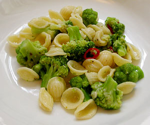

Brokkoli Anchovis Sauce
4 von 6brokkolirösschen schneiden und in salzwasser kurz blanchieren, abiessen und bei seite stellen. in eine bratpfanne bei niedriger hitze ein dose fein geschnittene anchovis filets in olivenöl einrühren. die anchovis verschmelzen so zu einer paste. eine fein gehackte chilischote sowie den brokkoli beigeben. 5 min dämpfen.
mit den al dente gekochten teigwaren sowie etwas parmesan vermischen.
